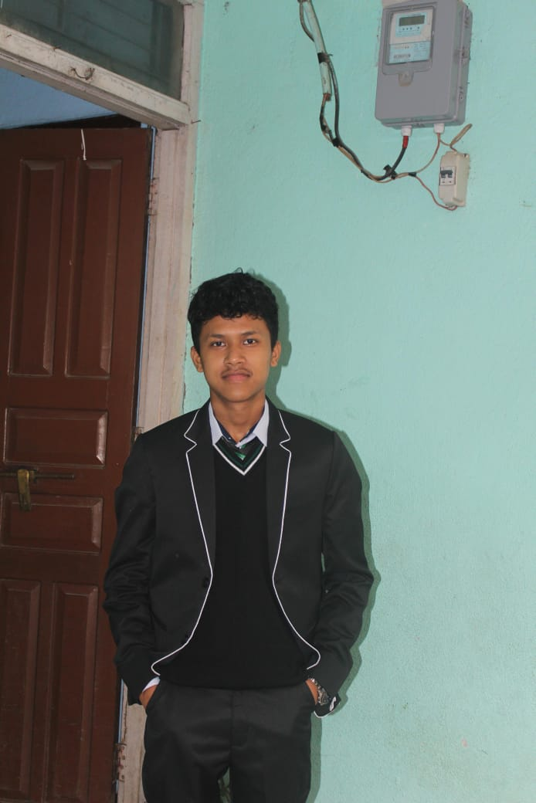

01
Linux System Administration Lab
A hands-on Linux lab where I practiced file management user administration, permissions, shell scripting, and essential command-line tools.
View project →Hello, I am
I'm a BSc CSIT student with a strong interest in Linux systems, computer networking, and cybersecurity. I'm building a solid foundation in operating systems, network administration, and ethical hacking while continuously developing practical skills through hands-on labs, projects, and real-world problem solving. My goal is to build secure, reliable systems and pursue a career in cybersecurity.

About me
I have a strong passion for Linux, networking, and cybersecurity.I enjoy exploring operating systems,understanding network infrastructure, and developing practical security skills through continuous learning and hands-on experience. I’m working toward a career in cybersecurity with a focus on network security and penetration testing.
Selected work
A hands-on Linux lab where I practiced file management user administration, permissions, shell scripting, and essential command-line tools.
View project →Configured IP addressing, subnetting, routing, and network services in a virtual environment to strengthen networking fundamentals.
View project →A personal dashboard for tracking my learning journey, completed labs, certifications, projects, and progress in Linux, networking, and cybersecurity.
View project →Get in touch
Have a project or idea in mind? I would love to hear from you.
Email Me